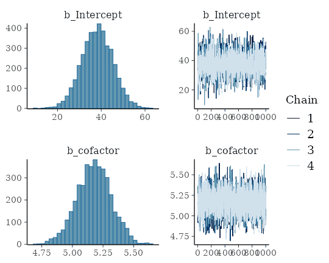
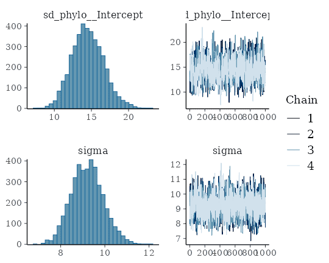
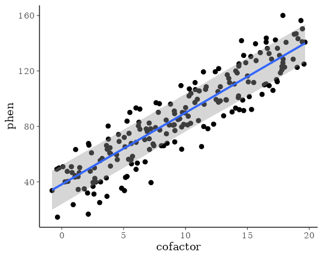
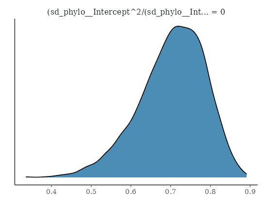
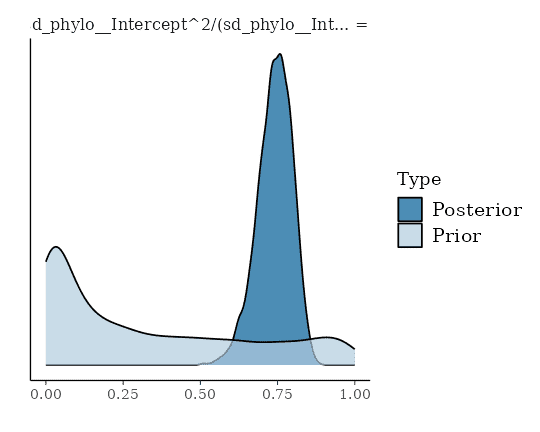
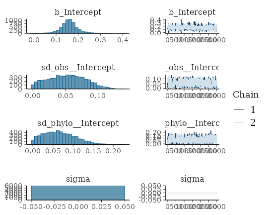
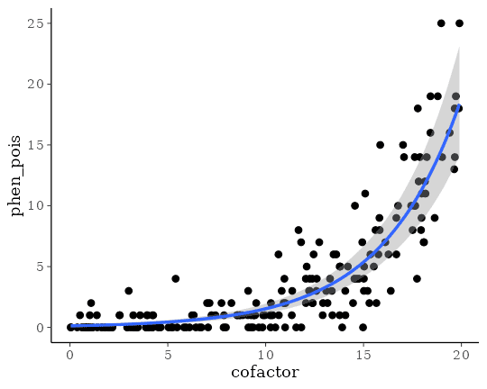
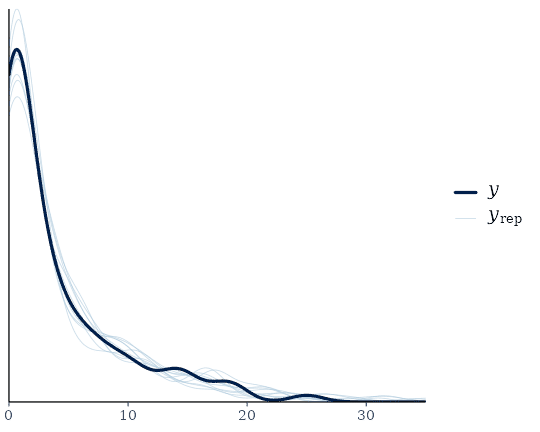
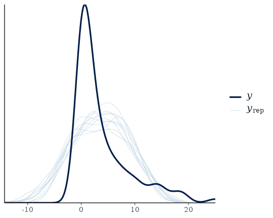

Estimating Phylogenetic Multilevel Models with brms
Paul Bürkner
2026-08-19
Source:vignettes/brms_phylogenetics.Rmd
brms_phylogenetics.RmdIntroduction
In the present vignette, we want to discuss how to specify phylogenetic multilevel models using brms. These models are relevant in evolutionary biology when data of many species are analyzed at the same time. The usual approach would be to model species as a grouping factor in a multilevel model and estimate varying intercepts (and possibly also varying slopes) over species. However, species are not independent as they come from the same phylogenetic tree and we thus have to adjust our model to incorporate this dependency. The examples discussed here are from chapter 11 of the book Modern Phylogenetic Comparative Methods and the application in Evolutionary Biology (de Villemeruil & Nakagawa, 2014). The necessary data can be downloaded from the corresponding website (https://www.mpcm-evolution.com/). Some of these models may take a few minutes to fit.
A Simple Phylogenetic Model
Assume we have measurements of a phenotype, phen (say
the body size), and a cofactor variable (say the
temperature of the environment). We prepare the data using the following
code.
phylo <- ape::read.nexus("https://paul-buerkner.github.io/data/phylo.nex")
data_simple <- read.table(
"https://paul-buerkner.github.io/data/data_simple.txt",
header = TRUE
)
head(data_simple) phen cofactor phylo
1 107.06595 10.309588 sp_1
2 79.61086 9.690507 sp_2
3 116.38186 15.007825 sp_3
4 143.28705 19.087673 sp_4
5 139.60993 15.658404 sp_5
6 68.50657 6.005236 sp_6The phylo object contains information on the
relationship between species. Using this information, we can construct a
covariance matrix of species (Hadfield & Nakagawa, 2010).
A <- ape::vcv.phylo(phylo)Now we are ready to fit our first phylogenetic multilevel model:
model_simple <- brm(
phen ~ cofactor + (1|gr(phylo, cov = A)),
data = data_simple,
family = gaussian(),
data2 = list(A = A),
prior = c(
prior(normal(0, 10), "b"),
prior(normal(0, 50), "Intercept"),
prior(student_t(3, 0, 20), "sd"),
prior(student_t(3, 0, 20), "sigma")
)
)With the exception of (1|gr(phylo, cov = A)) instead of
(1|phylo) this is a basic multilevel model with a varying
intercept over species (phylo is an indicator of species in
this data set). However, by using cov = A in the
gr function, we make sure that species are correlated as
specified by the covariance matrix A. We pass
A itself via the data2 argument which can be
used for any kinds of data that does not fit into the regular structure
of the data argument. Setting priors is not required for
achieving good convergence for this model, but it improves sampling
speed a bit. After fitting, the results can be investigated in
detail.
summary(model_simple) Family: gaussian
Links: mu = identity
Formula: phen ~ cofactor + (1 | gr(phylo, cov = A))
Data: data_simple (Number of observations: 200)
Draws: 4 chains, each with iter = 2000; warmup = 1000; thin = 1;
total post-warmup draws = 4000
Multilevel Hyperparameters:
~phylo (Number of levels: 200)
Estimate Est.Error l-95% CI u-95% CI Rhat Bulk_ESS Tail_ESS
sd(Intercept) 14.52 2.15 10.55 19.01 1.01 701 1544
Regression Coefficients:
Estimate Est.Error l-95% CI u-95% CI Rhat Bulk_ESS Tail_ESS
Intercept 38.14 7.15 24.03 52.00 1.00 2044 2393
cofactor 5.18 0.14 4.89 5.45 1.00 6495 3330
Further Distributional Parameters:
Estimate Est.Error l-95% CI u-95% CI Rhat Bulk_ESS Tail_ESS
sigma 9.21 0.72 7.86 10.70 1.00 992 1918
Draws were sampled using sampling(NUTS). For each parameter, Bulk_ESS
and Tail_ESS are effective sample size measures, and Rhat is the potential
scale reduction factor on split chains (at convergence, Rhat = 1).
plot(model_simple, N = 2, ask = FALSE)

plot(conditional_effects(model_simple), points = TRUE)
The so called phylogenetic signal (often symbolize by \(\lambda\)) can be computed with the
hypothesis method and is roughly \(\lambda = 0.7\) for this example.
hyp <- "sd_phylo__Intercept^2 / (sd_phylo__Intercept^2 + sigma^2) = 0"
(hyp <- hypothesis(model_simple, hyp, class = NULL))Hypothesis Tests for class :
Hypothesis Estimate Est.Error CI.Lower CI.Upper Evid.Ratio Post.Prob Star
1 (sd_phylo__Interc... = 0 0.7 0.08 0.52 0.84 NA NA *
---
'CI': 90%-CI for one-sided and 95%-CI for two-sided hypotheses.
'*': For one-sided hypotheses, the posterior probability exceeds 95%;
for two-sided hypotheses, the value tested against lies outside the 95%-CI.
Posterior probabilities of point hypotheses assume equal prior probabilities.
plot(hyp)
Note that the phylogenetic signal is just a synonym of the intra-class correlation (ICC) used in the context phylogenetic analysis.
A Phylogenetic Model with Repeated Measurements
Often, we have multiple observations per species and this allows to fit more complicated phylogenetic models.
data_repeat <- read.table(
"https://paul-buerkner.github.io/data/data_repeat.txt",
header = TRUE
)
data_repeat$spec_mean_cf <-
with(data_repeat, sapply(split(cofactor, phylo), mean)[phylo])
head(data_repeat) phen cofactor species phylo spec_mean_cf
1 107.41919 11.223724 sp_1 sp_1 10.309588
2 109.16403 9.805934 sp_1 sp_1 10.309588
3 91.88672 10.308423 sp_1 sp_1 10.309588
4 121.54341 8.355349 sp_1 sp_1 10.309588
5 105.31638 11.854510 sp_1 sp_1 10.309588
6 64.99859 4.314015 sp_2 sp_2 3.673914The variable spec_mean_cf just contains the mean of the
cofactor for each species. The code for the repeated measurement
phylogenetic model looks as follows:
model_repeat1 <- brm(
phen ~ spec_mean_cf + (1|gr(phylo, cov = A)) + (1|species),
data = data_repeat,
family = gaussian(),
data2 = list(A = A),
prior = c(
prior(normal(0,10), "b"),
prior(normal(0,50), "Intercept"),
prior(student_t(3,0,20), "sd"),
prior(student_t(3,0,20), "sigma")
),
sample_prior = TRUE, chains = 2, cores = 2,
iter = 4000, warmup = 1000
)The variables phylo and species are
identical as they are both identifiers of the species. However, we model
the phylogenetic covariance only for phylo and thus the
species variable accounts for any specific effect that
would be independent of the phylogenetic relationship between species
(e.g., environmental or niche effects). Again we can obtain model
summaries as well as estimates of the phylogenetic signal.
summary(model_repeat1) Family: gaussian
Links: mu = identity
Formula: phen ~ spec_mean_cf + (1 | gr(phylo, cov = A)) + (1 | species)
Data: data_repeat (Number of observations: 1000)
Draws: 2 chains, each with iter = 4000; warmup = 1000; thin = 1;
total post-warmup draws = 6000
Multilevel Hyperparameters:
~phylo (Number of levels: 200)
Estimate Est.Error l-95% CI u-95% CI Rhat Bulk_ESS Tail_ESS
sd(Intercept) 16.41 1.87 12.92 20.24 1.00 1596 2019
~species (Number of levels: 200)
Estimate Est.Error l-95% CI u-95% CI Rhat Bulk_ESS Tail_ESS
sd(Intercept) 4.98 0.86 3.22 6.59 1.00 1159 1410
Regression Coefficients:
Estimate Est.Error l-95% CI u-95% CI Rhat Bulk_ESS Tail_ESS
Intercept 36.04 7.95 20.31 51.73 1.00 3760 3597
spec_mean_cf 5.10 0.10 4.89 5.30 1.00 7636 4604
Further Distributional Parameters:
Estimate Est.Error l-95% CI u-95% CI Rhat Bulk_ESS Tail_ESS
sigma 8.11 0.21 7.71 8.52 1.00 4923 3893
Draws were sampled using sampling(NUTS). For each parameter, Bulk_ESS
and Tail_ESS are effective sample size measures, and Rhat is the potential
scale reduction factor on split chains (at convergence, Rhat = 1).
hyp <- paste(
"sd_phylo__Intercept^2 /",
"(sd_phylo__Intercept^2 + sd_species__Intercept^2 + sigma^2) = 0"
)
(hyp <- hypothesis(model_repeat1, hyp, class = NULL))Hypothesis Tests for class :
Hypothesis Estimate Est.Error CI.Lower CI.Upper Evid.Ratio Post.Prob Star
1 (sd_phylo__Interc... = 0 0.74 0.06 0.62 0.84 0 0 *
---
'CI': 90%-CI for one-sided and 95%-CI for two-sided hypotheses.
'*': For one-sided hypotheses, the posterior probability exceeds 95%;
for two-sided hypotheses, the value tested against lies outside the 95%-CI.
Posterior probabilities of point hypotheses assume equal prior probabilities.
plot(hyp)
So far, we have completely ignored the variability of the cofactor within species. To incorporate this into the model, we define
data_repeat$within_spec_cf <- data_repeat$cofactor - data_repeat$spec_mean_cfand then fit it again using within_spec_cf as an
additional predictor.
model_repeat2 <- update(
model_repeat1, formula = ~ . + within_spec_cf,
newdata = data_repeat, chains = 2, cores = 2,
iter = 4000, warmup = 1000
)The results are almost unchanged, with apparently no relationship
between the phenotype and the within species variance of
cofactor.
summary(model_repeat2) Family: gaussian
Links: mu = identity
Formula: phen ~ spec_mean_cf + (1 | gr(phylo, cov = A)) + (1 | species) + within_spec_cf
Data: data_repeat (Number of observations: 1000)
Draws: 2 chains, each with iter = 4000; warmup = 1000; thin = 1;
total post-warmup draws = 6000
Multilevel Hyperparameters:
~phylo (Number of levels: 200)
Estimate Est.Error l-95% CI u-95% CI Rhat Bulk_ESS Tail_ESS
sd(Intercept) 16.47 1.91 12.96 20.47 1.00 1651 2572
~species (Number of levels: 200)
Estimate Est.Error l-95% CI u-95% CI Rhat Bulk_ESS Tail_ESS
sd(Intercept) 4.96 0.85 3.18 6.57 1.00 1121 1054
Regression Coefficients:
Estimate Est.Error l-95% CI u-95% CI Rhat Bulk_ESS Tail_ESS
Intercept 36.14 7.85 20.13 51.43 1.00 4531 4045
spec_mean_cf 5.10 0.10 4.89 5.30 1.00 9111 4467
within_spec_cf -0.06 0.19 -0.42 0.32 1.00 9656 4117
Further Distributional Parameters:
Estimate Est.Error l-95% CI u-95% CI Rhat Bulk_ESS Tail_ESS
sigma 8.11 0.20 7.72 8.51 1.00 5526 4261
Draws were sampled using sampling(NUTS). For each parameter, Bulk_ESS
and Tail_ESS are effective sample size measures, and Rhat is the potential
scale reduction factor on split chains (at convergence, Rhat = 1).Also, the phylogenetic signal remains more or less the same.
hyp <- paste(
"sd_phylo__Intercept^2 /",
"(sd_phylo__Intercept^2 + sd_species__Intercept^2 + sigma^2) = 0"
)
(hyp <- hypothesis(model_repeat2, hyp, class = NULL))Hypothesis Tests for class :
Hypothesis Estimate Est.Error CI.Lower CI.Upper Evid.Ratio Post.Prob Star
1 (sd_phylo__Interc... = 0 0.74 0.06 0.62 0.84 0 0 *
---
'CI': 90%-CI for one-sided and 95%-CI for two-sided hypotheses.
'*': For one-sided hypotheses, the posterior probability exceeds 95%;
for two-sided hypotheses, the value tested against lies outside the 95%-CI.
Posterior probabilities of point hypotheses assume equal prior probabilities.A Phylogenetic Meta-Analysis
Let’s say we have Fisher’s z-transformed correlation coefficients \(Zr\) per species along with corresponding sample sizes (e.g., correlations between male coloration and reproductive success):
data_fisher <- read.table(
"https://paul-buerkner.github.io/data/data_effect.txt",
header = TRUE
)
data_fisher$obs <- 1:nrow(data_fisher)
head(data_fisher) Zr N phylo obs
1 0.28917549 13 sp_1 1
2 0.02415579 40 sp_2 2
3 0.19513651 39 sp_3 3
4 0.09831239 40 sp_4 4
5 0.13780152 66 sp_5 5
6 0.13710587 41 sp_6 6We assume the sampling variance to be known and as \(V(Zr) = \frac{1}{N - 3}\) for Fisher’s
values, where \(N\) is the sample size
per species. Incorporating the known sampling variance into the model is
straight forward. One has to keep in mind though, that
brms requires the sampling standard deviation (square
root of the variance) as input instead of the variance itself. The
group-level effect of obs represents the residual variance,
which we have to model explicitly in a meta-analytic model.
model_fisher <- brm(
Zr | se(sqrt(1 / (N - 3))) ~ 1 + (1|gr(phylo, cov = A)) + (1|obs),
data = data_fisher, family = gaussian(),
data2 = list(A = A),
prior = c(
prior(normal(0, 10), "Intercept"),
prior(student_t(3, 0, 10), "sd")
),
control = list(adapt_delta = 0.95),
chains = 2, cores = 2, iter = 4000, warmup = 1000
)A summary of the fitted model is obtained via
summary(model_fisher) Family: gaussian
Links: mu = identity
Formula: Zr | se(sqrt(1/(N - 3))) ~ 1 + (1 | gr(phylo, cov = A)) + (1 | obs)
Data: data_fisher (Number of observations: 200)
Draws: 2 chains, each with iter = 4000; warmup = 1000; thin = 1;
total post-warmup draws = 6000
Multilevel Hyperparameters:
~obs (Number of levels: 200)
Estimate Est.Error l-95% CI u-95% CI Rhat Bulk_ESS Tail_ESS
sd(Intercept) 0.05 0.03 0.00 0.10 1.00 789 1385
~phylo (Number of levels: 200)
Estimate Est.Error l-95% CI u-95% CI Rhat Bulk_ESS Tail_ESS
sd(Intercept) 0.07 0.04 0.01 0.15 1.00 768 1550
Regression Coefficients:
Estimate Est.Error l-95% CI u-95% CI Rhat Bulk_ESS Tail_ESS
Intercept 0.16 0.04 0.08 0.24 1.00 3299 2419
Further Distributional Parameters:
Estimate Est.Error l-95% CI u-95% CI Rhat Bulk_ESS Tail_ESS
sigma 0.00 0.00 0.00 0.00 NA NA NA
Draws were sampled using sampling(NUTS). For each parameter, Bulk_ESS
and Tail_ESS are effective sample size measures, and Rhat is the potential
scale reduction factor on split chains (at convergence, Rhat = 1).
plot(model_fisher)
The meta-analytic mean (i.e., the model intercept) is \(0.16\) with a credible interval of \([0.08, 0.25]\). Thus the mean correlation across species is positive according to the model.
A phylogenetic count-data model
Suppose that we analyze a phenotype that consists of counts instead of being a continuous variable. In such a case, the normality assumption will likely not be justified and it is recommended to use a distribution explicitly suited for count data, for instance the Poisson distribution. The following data set (again retrieved from mpcm-evolution.org) provides an example.
data_pois <- read.table(
"https://paul-buerkner.github.io/data/data_pois.txt",
header = TRUE
)
data_pois$obs <- 1:nrow(data_pois)
head(data_pois) phen_pois cofactor phylo obs
1 1 7.8702830 sp_1 1
2 0 3.4690529 sp_2 2
3 1 2.5478774 sp_3 3
4 14 18.2286628 sp_4 4
5 1 2.5302806 sp_5 5
6 1 0.5145559 sp_6 6As the Poisson distribution does not have a natural overdispersion
parameter, we model the residual variance via the group-level effects of
obs (e.g., see Lawless, 1987).
model_pois <- brm(
phen_pois ~ cofactor + (1|gr(phylo, cov = A)) + (1|obs),
data = data_pois, family = poisson("log"),
data2 = list(A = A),
chains = 2, cores = 2, iter = 4000,
control = list(adapt_delta = 0.95)
)Again, we obtain a summary of the fitted model via
summary(model_pois) Family: poisson
Links: mu = log
Formula: phen_pois ~ cofactor + (1 | gr(phylo, cov = A)) + (1 | obs)
Data: data_pois (Number of observations: 200)
Draws: 2 chains, each with iter = 4000; warmup = 2000; thin = 1;
total post-warmup draws = 4000
Multilevel Hyperparameters:
~obs (Number of levels: 200)
Estimate Est.Error l-95% CI u-95% CI Rhat Bulk_ESS Tail_ESS
sd(Intercept) 0.18 0.08 0.02 0.34 1.00 630 731
~phylo (Number of levels: 200)
Estimate Est.Error l-95% CI u-95% CI Rhat Bulk_ESS Tail_ESS
sd(Intercept) 0.18 0.09 0.03 0.40 1.00 619 1039
Regression Coefficients:
Estimate Est.Error l-95% CI u-95% CI Rhat Bulk_ESS Tail_ESS
Intercept -2.09 0.21 -2.51 -1.69 1.00 2831 2742
cofactor 0.25 0.01 0.23 0.27 1.00 3844 2885
Draws were sampled using sampling(NUTS). For each parameter, Bulk_ESS
and Tail_ESS are effective sample size measures, and Rhat is the potential
scale reduction factor on split chains (at convergence, Rhat = 1).
plot(conditional_effects(model_pois), points = TRUE)
Now, assume we ignore the fact that the phenotype is count data and fit a linear normal model instead.
model_normal <- brm(
phen_pois ~ cofactor + (1|gr(phylo, cov = A)),
data = data_pois, family = gaussian(),
data2 = list(A = A),
chains = 2, cores = 2, iter = 4000,
control = list(adapt_delta = 0.95)
)
summary(model_normal) Family: gaussian
Links: mu = identity
Formula: phen_pois ~ cofactor + (1 | gr(phylo, cov = A))
Data: data_pois (Number of observations: 200)
Draws: 2 chains, each with iter = 4000; warmup = 2000; thin = 1;
total post-warmup draws = 4000
Multilevel Hyperparameters:
~phylo (Number of levels: 200)
Estimate Est.Error l-95% CI u-95% CI Rhat Bulk_ESS Tail_ESS
sd(Intercept) 0.67 0.50 0.03 1.93 1.00 923 1198
Regression Coefficients:
Estimate Est.Error l-95% CI u-95% CI Rhat Bulk_ESS Tail_ESS
Intercept -3.09 0.66 -4.40 -1.91 1.00 2194 1218
cofactor 0.68 0.04 0.59 0.76 1.00 4955 2711
Further Distributional Parameters:
Estimate Est.Error l-95% CI u-95% CI Rhat Bulk_ESS Tail_ESS
sigma 3.44 0.18 3.10 3.79 1.00 3670 1725
Draws were sampled using sampling(NUTS). For each parameter, Bulk_ESS
and Tail_ESS are effective sample size measures, and Rhat is the potential
scale reduction factor on split chains (at convergence, Rhat = 1).We see that cofactor has a positive relationship with
the phenotype in both models. One should keep in mind, though, that the
estimates of the Poisson model are on the log-scale, as we applied the
canonical log-link function in this example. Therefore, estimates are
not comparable to a linear normal model even if applied to the same
data. What we can compare, however, is the model fit, for instance
graphically via posterior predictive checks.
pp_check(model_pois)
pp_check(model_normal)
Apparently, the distribution of the phenotype predicted by the Poisson model resembles the original distribution of the phenotype pretty closely, while the normal models fails to do so. We can also apply leave-one-out cross-validation for direct numerical comparison of model fit.
loo(model_pois, model_normal)Output of model 'model_pois':
Computed from 4000 by 200 log-likelihood matrix.
Estimate SE
elpd_loo -348.4 17.0
p_loo 30.0 3.5
looic 696.8 34.1
------
MCSE of elpd_loo is 0.2.
MCSE and ESS estimates assume MCMC draws (r_eff in [0.5, 1.5]).
All Pareto k estimates are good (k < 0.7).
See help('pareto-k-diagnostic') for details.
Output of model 'model_normal':
Computed from 4000 by 200 log-likelihood matrix.
Estimate SE
elpd_loo -536.1 16.0
p_loo 10.1 2.3
looic 1072.2 31.9
------
MCSE of elpd_loo is 0.1.
MCSE and ESS estimates assume MCMC draws (r_eff in [0.4, 1.4]).
All Pareto k estimates are good (k < 0.7).
See help('pareto-k-diagnostic') for details.
Model comparisons:
model elpd_diff se_diff p_worse diag_diff diag_elpd
model_pois 0.0 0.0 NA
model_normal -187.7 18.1 1.00 Since smaller values of loo indicate better fit, it is again evident
that the Poisson model fits the data better than the normal model. Of
course, the Poisson model is not the only reasonable option here. For
instance, you could use a negative binomial model (via family
negative_binomial), which already contains an
overdispersion parameter so that modeling a varying intercept of
obs becomes obsolete.
Phylogenetic models with multiple group-level effects
In the above examples, we have only used a single group-level effect (i.e., a varying intercept) for the phylogenetic grouping factors. In brms, it is also possible to estimate multiple group-level effects (e.g., a varying intercept and a varying slope) for these grouping factors. However, it requires repeatedly computing Kronecker products of covariance matrices while fitting the model. This will be very slow especially when the grouping factors have many levels and matrices are thus large.
References
de Villemeruil P. & Nakagawa, S. (2014) General quantitative genetic methods for comparative biology. In: Modern phylogenetic comparative methods and their application in evolutionary biology: concepts and practice (ed. Garamszegi L.) Springer, New York. pp. 287-303.
Hadfield, J. D. & Nakagawa, S. (2010) General quantitative genetic methods for comparative biology: phylogenies, taxonomies, and multi-trait models for continuous and categorical characters. Journal of Evolutionary Biology. 23. 494-508.
Lawless, J. F. (1987). Negative binomial and mixed Poisson regression. Canadian Journal of Statistics, 15(3), 209-225.